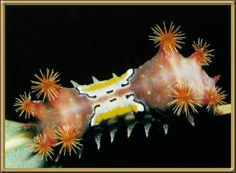

Photographer: Unknown
This is quite an amazing looking caterpillar! Unfortunately I don't know what it turns into. You can find more information about other types of Neola caterpillar at the Lepidoptera Larvae of Australia pages.